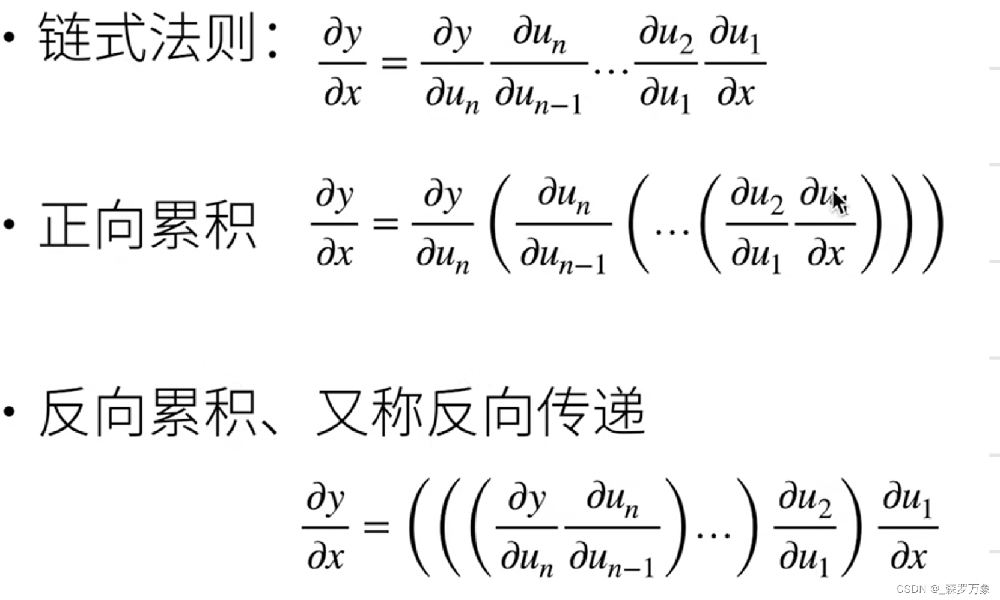

container_autograd
- container 源码 主要包括 Sequential，ModuleList，ModuleDict，ParameterList，ParameterDict，都继承自 Module
- Sequential 有 forword 函数，有运算功能和存放功能，ModuleList 只有存放功能，如果放在python的列表中就不能被nn.Module的方法访问了
We can only obtain the grad properties for the leaf nodes of the computational graph, which have requires_grad property set to True. For all other nodes in our graph, gradients will not be available.
We can only perform gradient calculations using backward once on a given graph, for performance reasons. If we need to do several backward calls on the same graph, we need to pass retain_graph=True to the backward call.
In many cases, we have a scalar loss function, and we need to compute the gradient with respect to some parameters. However, there are cases when the output function is an arbitrary tensor. In this case, PyTorch allows you to compute so-called Jacobian product, and not the actual gradient.
- 向量（或矩阵）对求导，pytorch实际上计算的是，tensor.backword传入的第一个参数就是，是一个向量；是雅可比矩阵，最后得到的是向量（或矩阵）
- Automatic Differentiation in Machine Learning: a Survey 的图2中提到了符号微分，数值微分，自动微分（前向）。表二提到了前向计算和对的前向自动微分，表3提到了前向自动微分和反向自动微分
前向运算和前向自动微分可以同时进行，但只能算出一个输入的导数
反向自动微分时可能有多个梯度传到同一个节点，有梯度累积
- 前向微分算每个节点对某个输入节点的导数，直至终点，即先算u1/x，再算u2/u1，…y/un
- 反向微分算结果对每个节点的导数，直至起点，即先算y/un，再算un/un-1
- 反向传播不一定计算量一定比前向计算小
